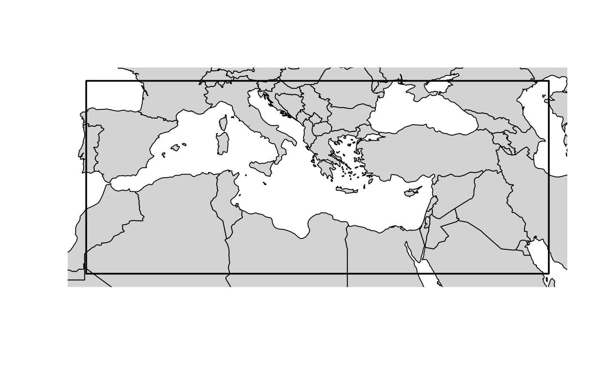
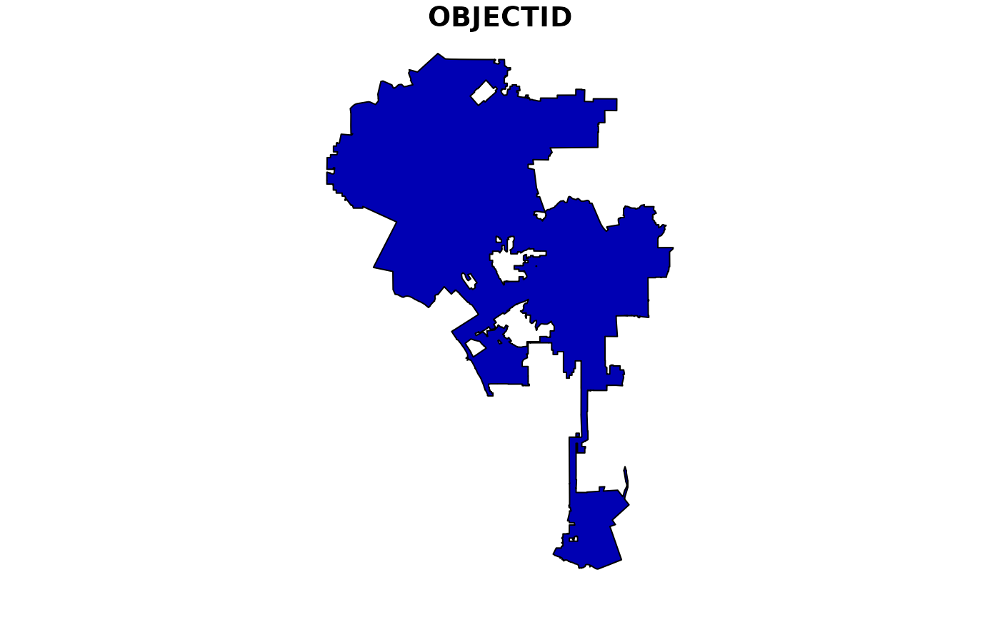
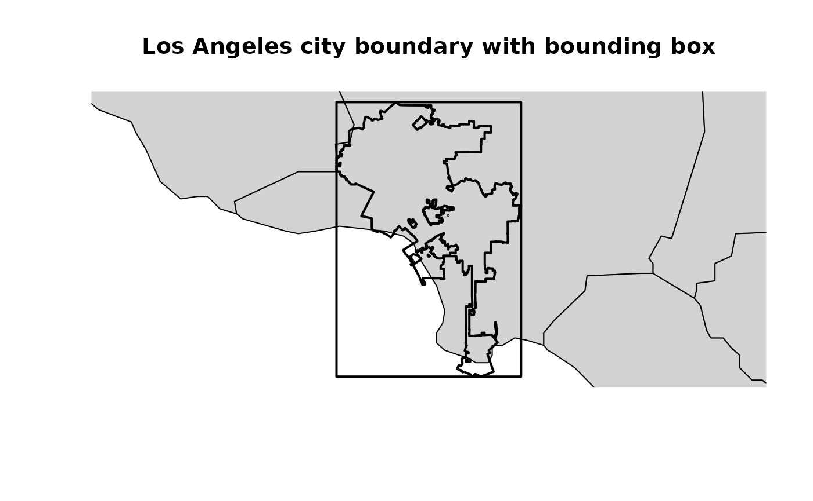

library(openaq)
library(sf)
#> Linking to GEOS 3.12.1, GDAL 3.8.4, PROJ 9.4.0; sf_use_s2() is TRUE
library(maps)The OpenAQ API has the ability to perform geospatial queries,
enabling you to retrieve data based on location. This vignette will
guide you through the two primary geospatial query methods available in
openaq: point and radius searches, and bounding box
searches.
openaq provides access to two methods for querying
locations on the OpenAQ platform geospatially:
Point and Radius: Searches around a given point coordinate (latitude, longitude) at a specified radius in meters. This is ideal for finding air quality data within a certain distance of a specific location.
Bounding Box: Searches within a spatial bounding box defined as a list of four coordinates:
xmin,ymin,xmax, andymax. This method is useful for querying data within a rectangular area.
Point and Radius
The list_location() function allows you to search for
locations near a given point. You provide the latitude and longitude of
the center point, as well as the radius within which to search. The
radius is specified in meters, with a maximum value of 25,000 (25
kilometers).
list_location(
coordinates = c(latitude = -73.0666, longitude = -36.7724), # the coordinates in Concepción, Chile.
radius = 10000 # 10,000 meters or 10 kilometers
)In this example, we are searching for locations within a 10 kilometer radius of the specified latitude and longitude. The result will be a list of locations that fall within this circular area.
Bounding box
For queries covering a rectangular area, you can use the
list_locations() function with the bbox argument. You need
to provide the minimum and maximum longitude (xmin,
xmax) and latitude (ymin, ymax)
values that define the corners of your bounding box.
list_locations(
bbox = c(
xmin = -8.478184,
ymin = 26.640174,
xmax = 50.803066,
ymax = 46.534067
)
)This query will return all locations within the defined rectangular region.

The map above visually represents the bounding box used in the example query.
Computing a bounding box from a polygon
Often, you’ll want to query data within a specific geographic area defined by a polygon, rather than a simple rectangle. Real-world boundaries are often complex shapes. For instance, consider the boundary of the city of Los Angeles, which has a complex, irregular shape.
url <- "https://maps.lacity.org/lahub/rest/services/Boundaries/MapServer/7/query?outFields=*&where=1%3D1&f=geojson"
la <- sf::st_read(url)
#> Reading layer `OGRGeoJSON' from data source
#> `https://maps.lacity.org/lahub/rest/services/Boundaries/MapServer/7/query?outFields=*&where=1%3D1&f=geojson'
#> using driver `GeoJSON'
#> Simple feature collection with 1 feature and 2 fields
#> Geometry type: POLYGON
#> Dimension: XY
#> Bounding box: xmin: -118.6682 ymin: 33.70366 xmax: -118.1554 ymax: 34.33731
#> Geodetic CRS: WGS 84
plot(la["OBJECTID"])
We can use the sf package to read the GeoJSON data
representing the city boundary.
To derive a bounding box from this polygon, we can use the
sf::st_bbox() method. This function calculates the minimum
and maximum x and y coordinates of the polygon, effectively creating a
bounding box that encompasses the entire shape. The output is a named
numeric vector, perfectly formatted for the bbox parameter in the
openaq function.
bbox <- sf::st_bbox(la)
bbox
#> xmin ymin xmax ymax
#> -118.66819 33.70366 -118.15537 34.33731This output gives you the xmin, ymin, xmax, and ymax values needed
for your openaq query.

This map shows the Los Angeles city boundary along with the calculated bounding box.
list_locations(
bbox = c(xmin = 100.052893, ymin = 13.495250, xmax = 101.041662, ymax = 13.974828)
)Now, you can directly use the bbox object generated by
sf::st_bbox() in your list_locations() call.
This will retrieve air quality data within the bounding box that
encompasses the city of Los Angeles.
For a detailed explanation about how the OpenAQ API works with these methods, see the official OpenAQ API documentation at https://docs.openaq.org/using-the-api/geospatial. This documentation provides further information on the available parameters and how to optimize your geospatial queries.